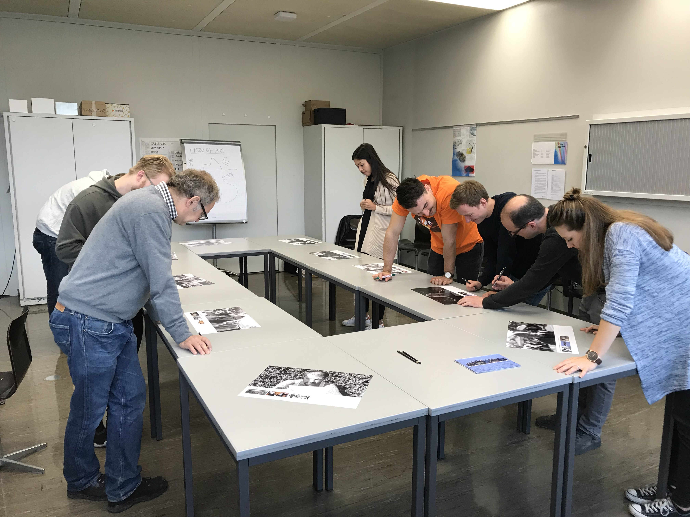
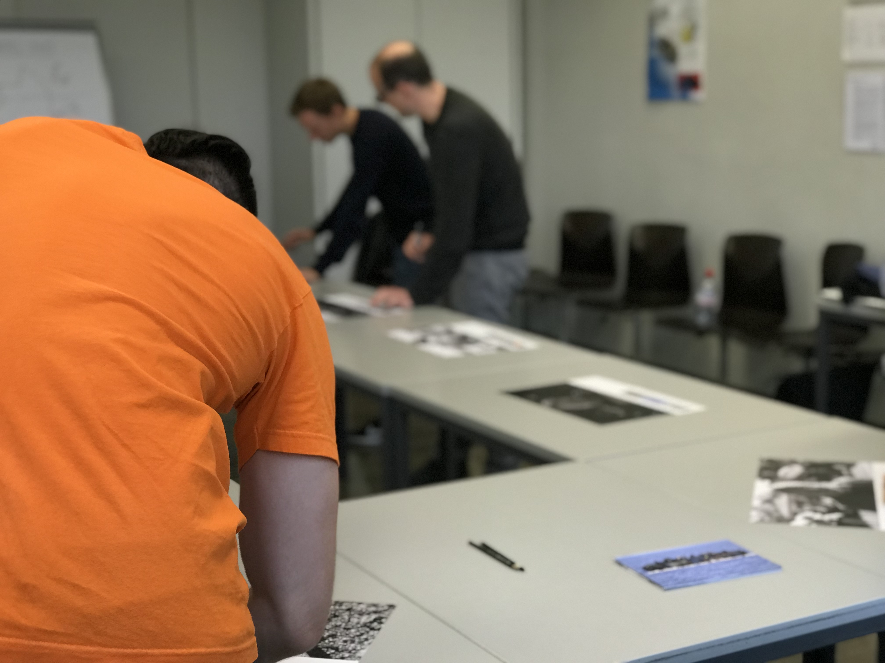

Endprodukt.
Am Samstag 28. Oktober 2017 haben wir unser experiment der Klasse in Form einer kleinen Ausstellung präsentiert.
Wir haben uns im Voraus viele Gedanken darüber gemacht welches die richtige Form ist um unsere Ergebnisse zu präsentieren, von Memories über Quiz kamen uns viele Ideen in den Sinn,
doch wir wurden uns einig dass die Arbeit am besten als eine Art Ausstellung präsentiert wird.
Wir haben die Reaktionen der Menschen auf ein A3 ausgedruckt und den Mitschülern drei der Emotionen gezeigt, nun durften unsere Mitschüler für sich versuechen zu erahnen welches der Bilder die Passanten wohl zu Gesicht bekamen.
Nachdem jeder seine Stimme zu den Bildern abgegeban hat, haben wir aufgelöst und zum grossen Erstaunen waren etwa 50% der Bilder richtig zugeordnet.
Einige Impressionen unserer Ausstellung:


Unsere Dokumentation zur Arbeit als PDF.